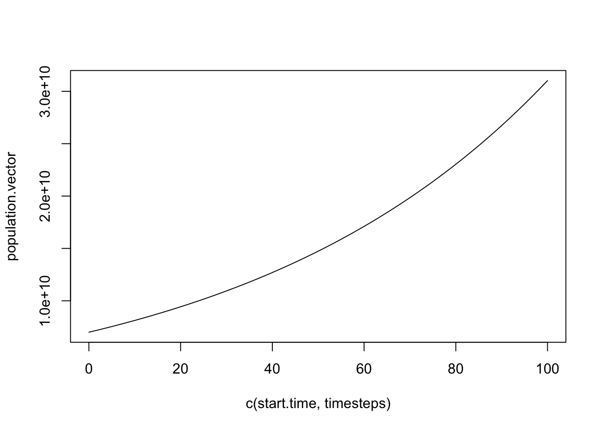
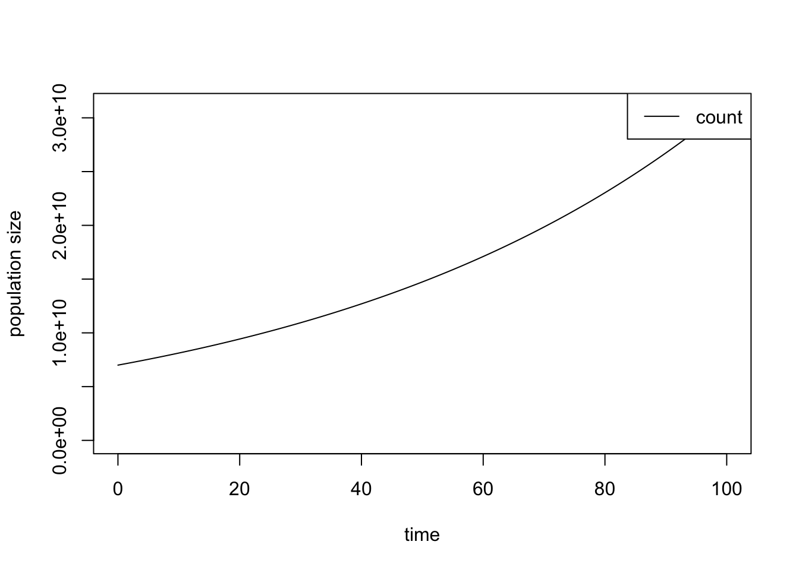

In this session we will start to think ahead about what kind of framework we will need when we move on to more complex models. We will build this framework (using data frames) in the context of our existing exponential growth model, and we will separate out another potentially complex element of the code – the plotting function – where we can refine it separately from the functionally important simulation code.
Our current model of growth of a population is held in the function step_simple_growth(), which has only one parameter (growth.rate) and one group of individuals (current.population). You could easily consider the amount of code and commenting that has gone into updating the latter with the former overkill.
However, we are developing this code knowing that we are going to be moving on to significantly more complex models with multiple parameters (e.g. infection rate, recovery rate), and multiple groups (e.g. susceptible and infected individuals), more complex ways of updating the population structure (of which more later), and more sophisticated ways of displaying the results.
With that in mind we are going to see how to make some of the structures in the code more general by introducing data frames, which are just R’s way of representing a table of data. Although the advantages of this are somewhat limited at the moment, they will be hopefully be clear when we move on to the epidemiological models.
The task for this practical is to replace the vector population.vector with a one-column data frame named population.df with column name count. We want to end up with a population update function (which we have now called step_deterministic_growth() for consistency with later programs) that takes in a data frame containing the current population count and the growth.rate parameter and outputs a data frame containing the updated count. Rewrite the code throughout so that it uses a data frame instead of a vector – we have called these files 0104-run-growth.R and 0104-step-growth.R. Remember to use data.frame() to create a data frame and rbind() to append one onto another.
So that we don’t need to worry about how to plot the outputs, we have provided a function called plot_populations() in the RPiR package which will take a data frame with any number of population columns and a single corresponding time column and plot them together in different colours with a legend indicating which line corresponds to which population. The RPiR package contains the function, so you will need to call library(RPiR) to load it. In order to use it you will need to add a column called time into your data frame with the times in it and then call:
plot_populations(population.df)We will therefore be breaking the code into three sections 0104-run-growth.R, 0104-step-growth.R and the RPiR package which handle the mechanics, the model and the display respectively.
We’ll start by working on the function, then go on to change the main script later.
We’ve generated 0104-step-growth.R (from 0103-step-simple-growth.R) for you to edit:
#' ### Function: step_simple_growth()
#' Run one step of a simple deterministic exponential growth model.
#'
#' Arguments:
#' - current.population -- the population count now
#' - growth.rate -- the growth rate
#'
#' Returns:
#' - the updated population count
#'
step_simple_growth <- function(current.population, growth.rate) {
# Calculate changes to population
new.additions <- growth.rate * current.population
# Calculate population at next timestep
next.population <- current.population + new.additions
# Return updated population
next.population
}Hint: See the text below for details of how to do this.
#' ### Function: step_deterministic_growth()
#' Run one step of a simple deterministic exponential growth model.
#'
#' Arguments:
#' - latest -- the population count now
#' - growth.rate -- the growth rate
#'
#' Returns:
#' - the updated population count
#'
step_deterministic_growth <- function(latest, growth.rate) {
# Calculate changes to population
new.additions <- growth.rate * latest$count
# Calculate population at next timestep
next.count <- latest$count + new.additions
# Create a data frame with the updated counts and return it
data.frame(count = next.count)
}grade_this_code()## function (check_env)
## {
## check_env[[".__correct"]] <- correct
## check_env[[".__incorrect"]] <- incorrect
## grade_this(fail_code_feedback = fail_code_feedback, expr = {
## .message <- code_feedback(allow_partial_matching = allow_partial_matching)
## if (is.null(.message)) {
## pass(get(".__correct"))
## }
## else {
## fail(get(".__incorrect"))
## }
## })(check_env)
## }
## <bytecode: 0x7fb5db3b6770>
## <environment: 0x7fb5db8ebf28>0104-step-growth.R should contain the function doing the work in the simulation, step_deterministic_growth(), but with a few improvements to work in terms of a data frame rather than just a vector. So the first thing to do is change the name of the function.
Next, we’ll rename the argument current.population to latest, being suitably generic to work in all future models even if they are not about population dynamics.
We are now allowing the populations that are handled within this function to potentially contain several columns corresponding to different sets of individuals. Thus, latest is a data frame that contains a single row containing the latest population size for each of the component populations – in this case just the one, count. Therefore, to perform the update step we need to extract the actual population we are interested in. For this we use the $ expression:
new.additions <- growth.rate * latest$count In general if we have a data frame called my.frame then my.frame$first.col will give us the column called first.col. So in our example (although we only have one column) we want to extract the column called count from the data frame called latest with the expression latest$count and use its value for the update step.
Finally, the function should return a data frame, like this:
data.frame(count = next.count) which will be assigned to whatever variable in the main script we choose, in this case updated.population.
For convenience, we’ve generated 0104-run-growth.R (from 0103-run-simple-growth.R) for you to edit. Note that, as before, source() has been commented out as it won’t work in the {learnr} environment. Instead, 0103-step-simple-growth-function.R and 0104-step-growth.R have been preloaded for you:
library(RPiR)
step_simple_growth <- function(current.population, growth.rate) {
new.additions <- growth.rate * current.population
next.population <- current.population + new.additions
next.population
}
step_deterministic_growth <- function(latest, growth.rate) {
new.additions <- growth.rate * latest$count
next.count <- latest$count + new.additions
data.frame(count = next.count)
}# Load the step_simple_growth() function into the global environment (my workspace)
# Note this next line would be needed if you were running this in RStudio
# source("0103-step-simple-growth-function.R")
#' Set up the simulation parameters
#' --------------------------------
#' First we set up the parameters for the simulation.
# Set the growth rate
human.annual.growth <- 0.015
# Starting population size
initial.count <- 7000000000
# And setting times
start.time <- 0
end.time <- 100
#' Run the simplest possible simulation
#' ------------------------------------
#' Then run it so that we can get the output we need
# Set up the population starting size (at the first timestep)
population.vector <- initial.count
# The timesteps that the simulation will run through
timesteps <- seq(from = start.time + 1, to = end.time)
# Now we loop through the time itself (starting at the second timestep)
for (new.time in timesteps) {
# Calculate population at next timestep
updated.human.population <- step_simple_growth(current.population = tail(population.vector, 1),
growth.rate = human.annual.growth)
# Add new element onto end of population vector
population.vector <- c(population.vector, updated.human.population)
}
#' Plot the results
#' ----------------
#' And finally we output the results.
# Now we can plot the timesteps against the population vector
plot(c(start.time, timesteps), population.vector, type = "l")
library(RPiR)
# Load the step_simple_growth() function into the global environment (my workspace)
# Note this next line would be needed if you were running this in RStudio
# source("0104-step-growth.R")
#' Set up the simulation parameters
#' --------------------------------
#' First we set up the parameters for the simulation.
# Set the growth rate
human.annual.growth <- 0.015
# Starting population size
initial.count <- 7000000000
# And setting times
start.time <- 0
end.time <- 100
#' Run the simplest possible simulation
#' ------------------------------------
#' Then run it so that we can get the output we need
# Set up the population starting size (at the first timestep)
population.df <- data.frame(count = initial.count)
# The timesteps that the simulation will run through
timesteps <- seq(from = start.time + 1, to = end.time)
# Now we loop through the time itself (starting at the second timestep)
for (new.time in timesteps) {
# Calculate population at next timestep
updated.population <- step_deterministic_growth(latest = tail(population.df, 1),
growth.rate = human.annual.growth)
# Add new element onto end of population vector
population.df <- rbind(population.df, updated.population)
}
#' Plot the results
#' ----------------
#' And finally we output the results.
# Now we can plot the timesteps against the population vector
population.df$time <- c(start.time, timesteps)
plot_populations(population.df)
grade_this_code()## function (check_env)
## {
## check_env[[".__correct"]] <- correct
## check_env[[".__incorrect"]] <- incorrect
## grade_this(fail_code_feedback = fail_code_feedback, expr = {
## .message <- code_feedback(allow_partial_matching = allow_partial_matching)
## if (is.null(.message)) {
## pass(get(".__correct"))
## }
## else {
## fail(get(".__incorrect"))
## }
## })(check_env)
## }
## <bytecode: 0x7fb5db3b6770>
## <environment: 0x7fb5d9d8a800>At the beginning of the file, we should load the RPiR package, because we’re going to be using the plot_populations() function that it provides, so add that in first:
library(RPiR)Then read in function from the new file (though since we’re working in the {learnr} environment rather than RStudio you should comment this line out, since the file has been preloaded for you):
source("0104-step-growth.R")With that done, the biggest change throughout 0104-run-growth.R (and 0104-step-growth.R) is that the population is now defined in terms of a data frame rather than as a vector. So setting it up will happen like this:
population.df <- data.frame(count = initial.count)A data frame is just R’s ways of referring to a table of data, so whereas our vector approach in the previous code would allow us to have a single list of values, the data frame will allow us to have several columns of data. Whilst this isn’t necessary for this piece of code the approach will be very useful when we are handling multiple populations (for example susceptible, infected and recovered individuals in an epidemiological model).
Now we want to send the latest row of the data frame to the function step_deterministic_growth(), which we will define below. It turns out we do that exactly the same way (using tail()) as we did with vectors. Notice that we have changed the name of the first parameter to something generic which will work in all future models even if they are not about population dynamics.
updated.population <- step_deterministic_growth(latest = tail(population.df, 1),
growth.rate = human.annual.growth)
population.df <- rbind(population.df, updated.population)The second line is slightly different, however. rbind() binds – appends – the rows of a second data frame (updated.population) after the end of the last row of the first data frame (population.df). The two data frames must have the same columns for this to work, or they wouldn’t fit: in this case they will both have to have one column called count, so our function will need to return a data frame with just that column in it when we write it below. You will get a clearer idea of how the data frames work once we start on the epidemiological models with multiple populations, so don’t worry if it isn’t currently clear.
At the end of your new 0104-run-growth.R file, rather than use R’s basic plot command plot as we did previously, we have now used a function plot_populations(), which is defined inside the RPiR library. The job of this function is to take a data frame with any number of population columns and a single corresponding time column and plot them together in different colours with a legend indicating which line corresponds to which population. It will allow us to ignore the plotting details for the moment.
In order to use it you will first need to delete the current plot() command at the end of your new file, and instead add a column onto your data frame with the times in and use plot_populations() on this updated data frame. As the timesteps vector is missing the start time of the simulation, the column you need to add to the data frame is actually c(start.time, timesteps):
population.df$time <- c(start.time, timesteps)Then you will call:
plot_populations(population.df)Again, the code should produce the same output as the previous three practicals, but perhaps with a slightly prettier and clearer display. Try, for instance, generating a second result with different initial parameters and then plot the results using:
plot_populations(population.df, new.graph = FALSE, col = "red")The extra argument col sets the colour of the line in the plot – “red”, “blue”, etc.; or you could use lty to set the type of line – solid, dash, dot, etc. – by using numbers (1 is solid, 2, 3, etc.). Note that plot_populations() also has a help file, which you can access by typing ?plot_populations:
library(RPiR)?plot_populationsThis documentation is available, since plot_populations() was installed as part of {RPiR}. When functions are loaded using source(), rather than being installed, then the only documentation is that in the file itself. Occasionally, you might come across a function that won’t let you ask for help using the ? syntax – ?for, ?function and a couple of others. In that case you can use the help() function instead.
# Access the help for the "function" commandHint: Try using help("___").
help("function")grade_this_code()## function (check_env)
## {
## check_env[[".__correct"]] <- correct
## check_env[[".__incorrect"]] <- incorrect
## grade_this(fail_code_feedback = fail_code_feedback, expr = {
## .message <- code_feedback(allow_partial_matching = allow_partial_matching)
## if (is.null(.message)) {
## pass(get(".__correct"))
## }
## else {
## fail(get(".__incorrect"))
## }
## })(check_env)
## }
## <bytecode: 0x7fb5db3b6770>
## <environment: 0x7fb5dd022b00>or go to the Help tab in RStudio and type the name into the box next to the magnifying glass.
As far as the plot_populations() function is concerned, feel free to refer back to this code later to understand better how it works by finding the code on GitHub. Or you can just run the name of the function on its own at an R prompt. We made a simpler (but less powerful) version of the plot function - plot_simple() - that you may find easier to read:
library(RPiR)
plot_simple## function (populations, new.graph = TRUE, xlim = NA, ylim = NA,
## lty = 1)
## {
## if (any(colnames(populations) == "time")) {
## time <- populations$time
## populations$time <- NULL
## if (is.na(xlim[1]))
## xlim <- c(min(time), max(time))
## }
## else stop("No time info available - data frame must have a column called 'time'")
## labels <- colnames(populations)
## line.cols <- seq_len(length(labels))
## if (is.na(ylim[1]))
## ylim <- c(0, max(rowSums(populations)))
## for (index in 1:length(labels)) {
## label <- labels[index]
## this.pop <- populations[[label]]
## if (new.graph) {
## plot(time, this.pop, xlim = xlim, ylim = ylim, xlab = "time",
## ylab = "population size", type = "l", col = line.cols[index],
## lty = lty[index])
## graphics::legend("topright", legend = labels, lty = lty,
## col = line.cols)
## new.graph <- FALSE
## }
## else graphics::lines(time, this.pop, col = line.cols[index],
## lty = lty[index])
## }
## }
## <bytecode: 0x7fb5dd5bdbb0>
## <environment: namespace:RPiR>